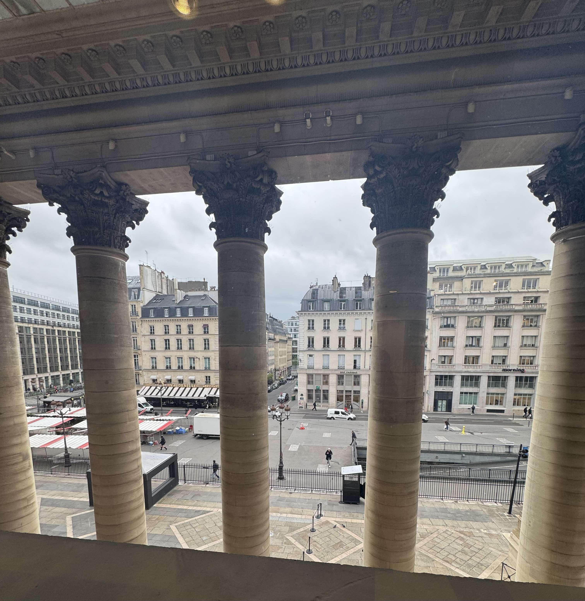
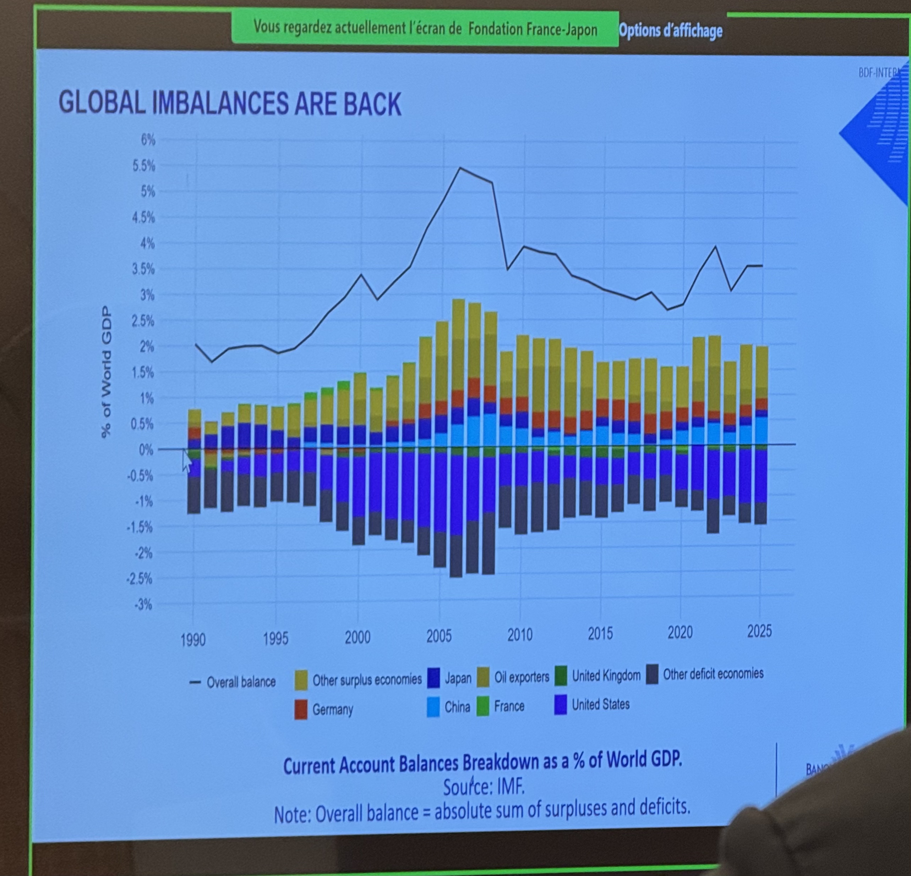
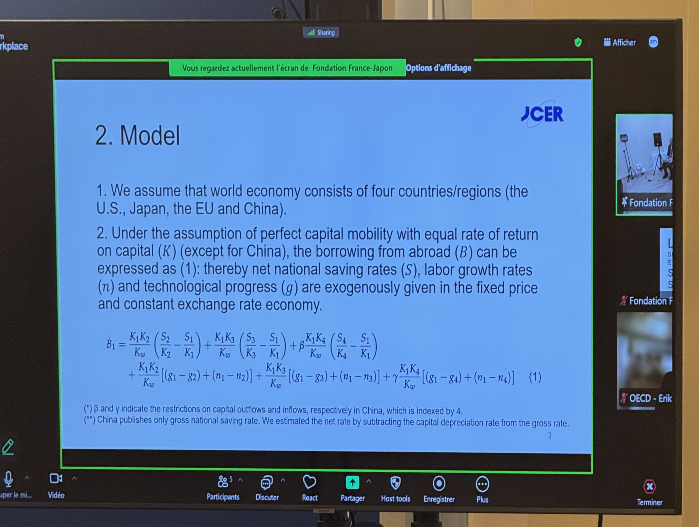

I had the chance to attend the 2026 summer conference of the France-Japon Foundation and Banque de France, which took place at the Palais Brongniart in Paris. This year's topic was "Global Imbalances: (Un)learned Lessons from the Japanese Experience".

As it was emphasized several times during the conference, Japan is an economy with profound historical experience managing global imbalances, notably the "lost decades." Throughout the event, different perspectives were explored from both Japanese and French economists and policymakers.
The Return of Global Imbalances & The Plaza Accord — Takeo Hoshi
Global imbalances have definitively returned, and the scope extends far beyond simple trade competition. Technically speaking, global imbalances can be defined as the sum of the absolute values of each economy's current account deficit and surplus.

The Plaza Accord is a crucial shift in economic policy that occurred in 1985. During that period, Reagan's fiscal expansion paired with Volcker's disinflation (highlighting that interest rates alone cannot resolve the issue, but are part of the process) led to a remarkably strong dollar and surging protectionist pressure. The Accord implied a dollar depreciation, which reduced protectionist pressure and created room for political adjustments and domestic structural reforms, with the ultimate goal of lowering global imbalances.
While the immediate and short-term objectives were achieved, the longer-term objectives proved more complicated. The agreement couldn't fundamentally halt the increase in the US saving rate or Japanese demand. The outcomes are perceived completely differently:
- Japan: The appreciation of the yen severely damaged competitiveness, leading to economic stagnation and what is now known as the "lost decades."
- United States: The outcomes were largely viewed as desired.
Ultimately, US pressure led to yen appreciation, which prompted Japanese monetary easing to resist it. This easing fueled a bubble economy that inevitably burst, leading to the lost decades. Generally, the easing policies are forgotten in what caused this economic event.
How the Landscape Has Changed (1985-2000 vs. Today)
The global paradigm has shifted significantly since the Plaza Accord era. The principal surplus country is no longer Japan, but China. Furthermore, there is substantially less trust in multilateral rules today. What used to be primarily an economic rivalry has now evolved into a geopolitical and economic rivalry.
Structural Adjustments & Macroeconomic Modeling — Kazumasa Iwata
Borrowing from abroad was modeled by K. Iwata as a function of the labor growth rate, technological progress, and the national saving rate. Notably, total factor productivity is expected to begin decreasing globally by 2035.

Effective structural adjustments must be made by some countries to correct these imbalances:
- China: Needs to shift toward more domestic consumption.
- United States: Must focus on better public finances and reducing deficits.
- Europe: Requires more productive investment. (Currently, the core issue with EU investments isn't the percentage of investment, but its composition, exacerbated by capital markets that remain fragmented across member states).
If debt reaches levels perceived as unsustainable, financial markets will force abrupt, painful adjustments. Tariffs and industrial policies are largely ineffective tools for rebalancing these global imbalances. With foreign exchange (Forex) markets now driven 90% by speculative trading and only 10% by real transactions, orderly adjustments require radical transparency. Transparency enables the proper functioning of markets to quantify and price risks accurately.
Japan's Path Forward: "Sanaenomics" — Takuji Aida
Has Japan finally exited its "lost decades"? While there is a nominal GDP (NGDP) expansion, structural stagnating pressures remain. For instance, the corporate saving rate should theoretically be below zero for heavy investment, but it remains above zero in Japan, indicating the transition isn't complete.
The path forward is being framed around Sanaenomics, which marks a transition from a cost-cutting model to an investment growth model. Key pillars include:
- Strategic investments.
- Creating a "high pressure economy" by shifting the output gap target from a low-pressure 0% to a high-pressure 2%.
Currently, the CAPEX cycle is shifting upward, and corporate net debt has disappeared. While the debt structure is resilient, it still needs to be reduced, though the fiscal situation is improving alongside rising NGDP.
Global Imbalances Nowadays — Xavier Debrun
China's economic structure intrinsically enables imbalances, and this will likely continue with the integration of AI. China currently has little room for economic stimulus due to military spending and existing deficits. Furthermore, AI adoption in China is heavily focused on manufacturing and automation, which does little to boost domestic consumption, and may even harm it.
Globally, imbalances are currently driven more by saving rates than by investment. Right now, there are more trade surpluses globally than deficits (oil exporters, for instance, generally run persistent trade surpluses). High and persistent imbalances are dangerous because flows eventually accumulate into stocks, creating a snowball effect.
On the European front, U.S. tariffs have, on average, no real directional impact on the EU. The effect is not K-shaped; rather, tariffs simply lower both exports and imports, acting more as a substitute to a VAT increase.